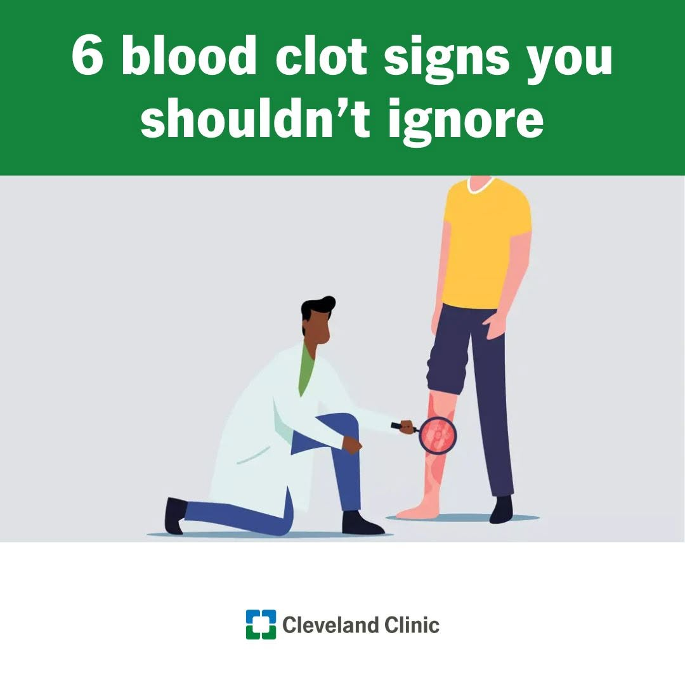

Calf raises act as a second heart for venous return and may lower DVT risk
Louis endorses calf raises for chronic venous insufficiency and DVT risk. The calf's muscle pump pushes blood back to the heart, and even seated raises help.
A shared explainer says the calf muscle pump pushes venous blood toward the heart during walking and standing. It lists benefits such as better venous circulation, less swelling and a lower risk of leg clots, though no studies are cited.
Did you know that in our legs we have a “second heart”?
No, it's not a legend: it's the nickname given to calf muscles, and the reason is really fascinating!When we walk, climb the stairs or simply stand up, these muscles contract and act like a real natural pump, pushing blood upwards against the force of gravity, in the direction of the heart. 💪🩸
This mechanism is essential for:
✔️ Promote venous circulation
✔️ Prevent blood clots in the legs
✔️ Reduce swelling, feeling of heaviness and varicose veins
✔️ Reduce the risk of deep venous thrombosisAll of this thanks to the synergistic work of muscles and venous valves, which prevent the blood from going back.
👉 Here’s why sitting or standing for too long can be harmful, while regular movement — even with a simple walk — helps the circulatory system function better.
💡 In practice: every step you take is a gift to your heart.
Walking, moving, stretching... These are simple gestures, but fundamental to health.❤️ Don’t forget: taking care of your legs means taking care of your heart.
Louis endorses calf raises for chronic venous insufficiency and DVT risk. The calf's muscle pump pushes blood back to the heart, and even seated raises help.
Triggered by a public figure's diagnosis, Louis explains that in CVI the valves in leg veins fail and blood does not return properly. The condition is common in older adults and usually benign but raises DVT risk and can cause hard-to-heal ulcers when advanced.

The shared text defines chronic venous disease as covering all venous disorders, from asymptomatic spider and varicose veins to ulcers, while chronic venous insufficiency denotes the more advanced forms such as edema and skin changes. It is a short definitional overview of a vein condition.

Louis endorses a shared claim that doing calf raises after eating lowers the post-meal glucose rise, via soleus muscle activity that boosts non-insulin-mediated glucose uptake. He points to a Diabetes in Control article; the shared post cites no formal study details.

A shared Cleveland Clinic item explains that venous clots can show no symptoms or severe ones; the most common are DVT in the legs and pulmonary embolism when a clot travels to the lungs.
Louis asks whether group members take Eliquis and how supplements interact with it, since some supplements add to the anticoagulant effect and it is metabolized by CYP3A4. In an edit he reports his mother's calf DVT diagnosis was wrong: repeat ultrasound and D-dimer in a vascular clinic showed clear veins, noting ultrasound alone is only about 60% accurate for DVT.